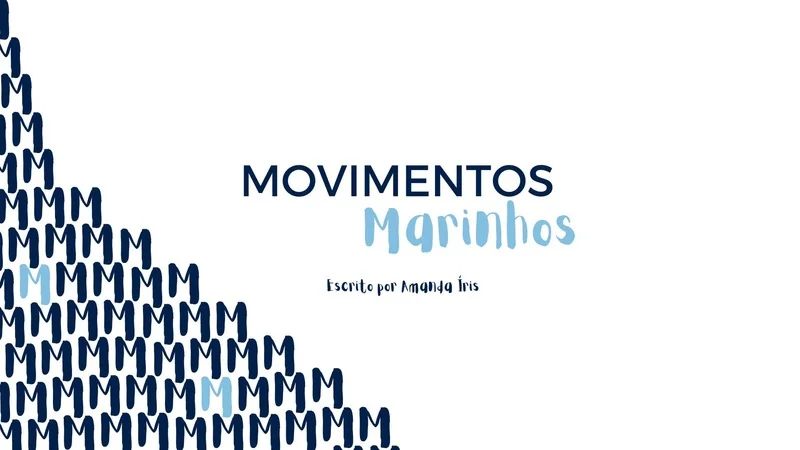

Curta-metragem · 2024
Movimentos Marinhos

Acompanhar o filmeO projeto
Um curta sobre a relação entre mãe e filha em um momento de transformação afetiva e simbólica, desenvolvido por uma equipe majoritariamente feminina.
Minha participação
Participei da assistência de direção, edição, produção e social media. A direção do filme é de Amanda Íris.
Direção: Amanda Íris. Projeto contemplado pelo edital PNAB Pouso Alegre.
Iniciado em outubro de 2024